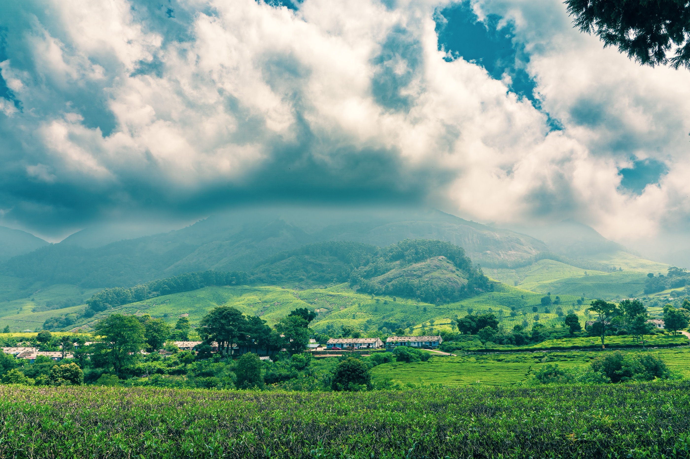

Assam
"The Gateway to the Northeast"
Quick Facts
Popular Tourist Attractions
Kaziranga National Park
UNESCO World Heritage Site famous for one-horned rhinoceroses.
Majuli Island
World's largest river island and hub of Vaishnavite culture.
Kamakhya Temple
One of the most sacred Shakti Peethas in India.
Nature & Wildlife
Assam is home to diverse wildlife including the one-horned rhinoceros, hoolock gibbons, and swamp deer. National parks like Kaziranga, Manas, and Nameri attract nature lovers worldwide.
Famous Personalities
- Bhupen Hazarika: Legendary musician and poet.
- Himanta Biswa Sarma: Current Chief Minister and prominent leader.
- Hima Das: Gold medal-winning sprinter.
Local Handicrafts
Assam is known for its handloom industry — Muga and Eri silk sarees, bamboo crafts, pottery, and decorative masks from Majuli.
Climate
Subtropical climate with heavy monsoon rains. Summers are humid, and winters are cool and pleasant.
Culture & Festivals
Festivals
Bihu is the most important festival celebrated with dance, music, and traditional food.
Dance & Music
Folk forms like Bihu dance and Ojapali are integral to Assamese culture.
Cuisine
Famous dishes include Assam Laksa, Masor Tenga (sour fish curry), and rice-based meals.
Clothing
Mekhela Chador for women and traditional dhoti-kurta with gamosa for men.
Did You Know? Assam produces more than half of India's total tea and is known globally for Assam Tea.
Note: Information may be subject to updates. Kindly notify us of any discrepancies.